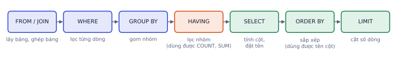
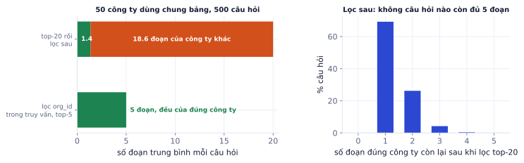

Giai đoạn P8 · Production và MLOpsTuần 35–39Có nội dung đầy đủ
Hệ thống AI thật hiếm khi chỉ có model: có cơ sở dữ liệu lưu người dùng và lịch sử, vector store cho RAG, cache, hàng đợi cho việc chạy lâu, và xác thực để biết ai được làm gì. Theo các phân tích tin tuyển dụng, SQL, data pipeline và kỹ năng backend là nhóm kỹ năng giúp ứng viên AI Engineer nổi bật. Bài này dạy những phần đủ dùng, với truy vấn SQL đã chạy thật và một mô phỏng cho thấy vì sao phân quyền phải nằm trong truy vấn tìm kiếm.
Bức tranh backend của một hệ AI
Vì sao cần học
Dự án freelance điển hình: "chatbot trả lời dựa trên tài liệu của công ty, mỗi phòng ban chỉ thấy tài liệu của mình, lưu lịch sử hỏi đáp, cho tải PDF lên". Phần model chỉ chiếm một phần nhỏ; phần lớn là lưu trữ, phân quyền, xử lý nền. Ứng viên biết cả hai phần được trả cao hơn và ít phụ thuộc vào người khác.
Thành phần
Dùng để
Công cụ phổ biến
Cơ sở dữ liệu quan hệ
người dùng, quyền, lịch sử, log có cấu trúc
Postgres, MySQL
Vector store
tìm đoạn tài liệu cho RAG
pgvector, Qdrant, Weaviate
Cache, bộ đếm
kết quả lặp lại, phiên, rate limit
Redis
Hàng đợi tác vụ
việc chạy lâu: xử lý PDF, train lại
Celery, RQ, Arq (trên Redis)
Kho file
PDF, ảnh, model
S3, Google Cloud Storage, MinIO
SQL cho kỹ sư AI
Phần lớn dữ liệu công ty nằm trong cơ sở dữ liệu quan hệ. Bạn cần viết được truy vấn để lấy dữ liệu train, làm bộ eval, phân tích log và chi phí.
Thứ tự thực hiện
SQL được viết theo thứ tự SELECT … FROM … WHERE …, nhưng được thực hiện theo thứ tự khác:

Thứ tự logic khi cơ sở dữ liệu chạy một truy vấn. WHERE chạy trước khi gom nhóm nên không dùng được COUNT, SUM; muốn lọc theo giá trị tổng hợp thì dùng HAVING.
Ví dụ chạy thật
Bảng orders (đã chạy bằng SQLite trong Python):
order_id
customer
created_at
total
status
1
Bình
2026-09-03
450
done
2
Chi
2026-09-10
120
returned
3
Bình
2026-10-01
300
done
4
Dũng
2026-10-05
800
done
5
Chi
2026-10-20
250
done
6
Bình
2026-10-28
90
done
7
Dũng
2026-11-02
60
returned
-- khách có từ 2 đơn không hoàn trở lên, tổng tiềnSELECTcustomer,COUNT(*)ASn,SUM(total)ASsFROMordersWHEREstatus<>'returned'GROUPBYcustomerHAVINGCOUNT(*)>=2ORDERBYsDESC;-- kết quả: ('Bình', 3, 840)
Ví dụ từng bước
Đi theo thứ tự thực hiện:
WHERE bỏ đơn 2 và 7 (returned), còn 5 đơn.
GROUP BY customer: Bình {1, 3, 6}, Chi {5}, Dũng {4}.
HAVING COUNT(*) >= 2: chỉ Bình còn lại.
SELECT: n = 3, s = 450 + 300 + 90 = 840.
Chi có 2 đơn trong bảng, nhưng một đơn đã hoàn và bị WHERE loại trước khi đếm, nên không qua HAVING.
-- mỗi khách: đơn gần nhất (window function)SELECTcustomer,order_id,created_atFROM(SELECT*,ROW_NUMBER()OVER(PARTITIONBYcustomerORDERBYcreated_atDESC)ASrnFROMorders)WHERErn=1;-- ('Bình', 6, '2026-10-28'), ('Chi', 5, '2026-10-20'), ('Dũng', 7, '2026-11-02')
Window function (ROW_NUMBER, RANK, LAG, SUM(...) OVER) tính trên một "cửa sổ" các dòng liên quan mà không gom nhóm: mỗi dòng giữ nguyên, có thêm cột tính được. Rất hay dùng cho: lấy N bản ghi mới nhất mỗi người dùng, so với lần trước, tổng lũy kế.
Lỗi hay gặp
Ghép chuỗi người dùng nhập vào câu SQL.f"SELECT * FROM docs WHERE title = '{q}'" cho phép SQL injection: người dùng gõ ' OR '1'='1 là đọc được mọi tài liệu. Luôn dùng tham số: cur.execute("SELECT * FROM docs WHERE title = %s", (q,)). Cảnh giác gấp đôi khi để LLM sinh SQL (text-to-SQL): chạy bằng tài khoản chỉ có quyền đọc, trên view đã giới hạn bảng và dòng.
Postgres và pgvector
pgvector thêm kiểu vector và tìm kiếm tương đồng vào Postgres. Lợi ích: một cơ sở dữ liệu cho cả dữ liệu nghiệp vụ lẫn embedding, lọc theo metadata bằng SQL bình thường, giao dịch an toàn, sao lưu một chỗ.
CREATEEXTENSIONIFNOTEXISTSvector;CREATETABLEchunks(idbigserialPRIMARYKEY,org_idintNOTNULL,doc_idint,contenttext,embeddingvector(1024));CREATEINDEXONchunksUSINGhnsw(embeddingvector_cosine_ops);CREATEINDEXONchunks(org_id);SELECTid,content,1-(embedding<=>$1)ASsimilarity-- <=> là khoảng cách cosineFROMchunksWHEREorg_id=$2-- phân quyền ngay trong truy vấnORDERBYembedding<=>$1LIMIT5;
2.000.000 × 768 × 4 = 6,1 GB chỉ cho vector. Index HNSW thường thêm cỡ tương đương, cộng nội dung văn bản. Postgres muốn giữ index trong RAM để tìm nhanh, nên server cần khoảng 16 GB RAM trở lên. Tính từ đầu, trước khi chọn gói máy chủ.
Khi nào dùng vector store riêng (Qdrant, Weaviate) thay pgvector: hàng chục triệu vector trở lên, cần tìm kiếm lai (vector + từ khóa) có sẵn, hoặc cần mở rộng ngang dễ dàng. Với hầu hết dự án vừa và nhỏ, pgvector là đủ và đơn giản hơn.
Phân quyền trong RAG
Hệ RAG phục vụ nhiều công ty (hoặc nhiều phòng ban) dùng chung một bảng chunks. Hai cách:
Lọc sau: tìm top-20 đoạn gần nhất trên toàn bảng, rồi bỏ các đoạn không thuộc công ty người hỏi (hoặc bảo LLM "chỉ dùng đoạn của công ty X").
Lọc trong truy vấn:WHERE org_id = :org ngay trong câu tìm kiếm, lấy top-5.
Mô phỏng: 50 công ty, mỗi công ty 400 đoạn, nhiều công ty có tài liệu cùng chủ đề (chính sách đổi trả, bảo hành…). 500 câu hỏi, mỗi câu từ một công ty:

Lọc sau: trung bình chỉ 1,4 trong 20 đoạn thuộc đúng công ty; 18,6 đoạn là của công ty khác. Không câu hỏi nào còn đủ 5 đoạn để trả lời. Lọc trong truy vấn: luôn có 5 đoạn đúng công ty.
Lọc sau sai theo hai cách cùng lúc:
Chất lượng: công ty nhỏ hay có chủ đề giống công ty khác gần như không còn đoạn nào để trả lời.
Rò rỉ dữ liệu: nếu 20 đoạn được đưa vào context rồi "bảo LLM chỉ dùng đoạn của công ty X", dữ liệu của 19 công ty khác đã nằm trong prompt. Một câu prompt injection (P4.8), hoặc một lỗi nhỏ của LLM, là đủ để lộ.
Ghi nhớ: dữ liệu của người dùng A không bao giờ được lọt vào context khi trả lời người dùng B. Lọc theo quyền ngay trong truy vấn tìm kiếm, với org_id lấy từ phiên đăng nhập, không từ tham số do client hay LLM gửi lên.
Cache với Redis
Redis là kho key-value trong RAM, đọc ghi cỡ dưới một mili giây. Dùng để cache kết quả model, lưu phiên hội thoại, đếm rate limit. Mỗi key có thể đặt thời hạn (TTL) để tự hết hạn.
importhashlib,json,fakeredisr=fakeredis.FakeRedis()# chạy thử không cần server; thật: import redis; r = redis.Redis(host="localhost", port=6379)calls=0defmodel_predict(text):# thay cho model thật, đếm số lần bị gọiglobalcalls;calls+=1return{"label":"tích cực","len":len(text)}defcached_predict(text,ttl=3600):key="pred:v3:"+hashlib.sha256(text.encode()).hexdigest()# v3: phiên bản model/promptif(hit:=r.get(key))isnotNone:returnjson.loads(hit)out=model_predict(text)r.setex(key,ttl,json.dumps(out))returnoutforqin["ghế đẹp","ghế đẹp","giao chậm","ghế đẹp"]:cached_predict(q)print("4 yêu cầu, model chỉ chạy",calls,"lần; TTL còn lại:",r.ttl("pred:v3:"+hashlib.sha256("ghế đẹp".encode()).hexdigest()),"giây")
Kết quả khi chạy
4 yêu cầu, model chỉ chạy 2 lần; TTL còn lại: 3599 giây
Lỗi hay gặp
Cache không gắn phiên bản. Đổi model hoặc prompt mà khóa cache giữ nguyên thì người dùng tiếp tục nhận câu trả lời cũ suốt thời gian TTL, và mọi đo lường sau thay đổi đều sai. Đưa phiên bản model/prompt vào khóa (như v3 ở trên), và không cache câu trả lời phụ thuộc người dùng (tình trạng đơn hàng của tôi) bằng khóa chỉ gồm câu hỏi.
Hàng đợi tác vụ
Việc chạy lâu (xử lý 500 trang PDF, train lại, sinh 100 ảnh) không nên chạy trong request HTTP: client chờ quá lâu, proxy cắt kết nối sau 30–60 giây, và một server bận một việc dài thì không phục vụ được ai khác.
API nhận yêu cầu, ghi vào hàng đợi (Celery, RQ, Arq với Redis), trả về ngay job_id.
Worker chạy nền lấy việc ra làm, cập nhật trạng thái (đang chờ, đang chạy, xong, lỗi).
Client hỏi /jobs/{job_id} định kỳ, hoặc nhận webhook khi xong.
Muốn xong trong 10 phút (600 giây): cần 240 × 45 / 600 = 18 worker. Nếu embedding chạy trên GPU dùng chung, GPU có thể thành điểm nghẽn trước khi đủ 18 worker; đo thật trước khi hứa.
Thêm vào worker: thử lại khi lỗi tạm thời (mạng, API quá tải) với thời gian chờ tăng dần; idempotent (chạy lại một việc hai lần không tạo dữ liệu trùng, ví dụ xóa đoạn cũ của file trước khi ghi đoạn mới).
Xác thực và bí mật
Mỗi request kiểm tra ai gọi (API key, token đăng nhập) và được làm gì (chỉ xem tài liệu của tổ chức mình).
Phân quyền áp ở tầng truy vấn dữ liệu (WHERE org_id = :org), không trông vào prompt.
Khóa API của nhà cung cấp LLM chỉ nằm ở server, trong biến môi trường hoặc trình quản lý bí mật; không bao giờ ở frontend, trong git, hay trong Docker image.
Lưu API key của khách bằng hash, như mật khẩu; hiển thị nguyên văn một lần duy nhất khi tạo.
Tự kiểm tra nhanh
Tóm tắt bài và thuật ngữ
Chủ đề
Ý chính
SQL
thứ tự FROM → WHERE → GROUP BY → HAVING → SELECT → ORDER BY → LIMIT; window function; luôn dùng tham số
pgvector
vector + dữ liệu nghiệp vụ trong Postgres; HNSW; tính RAM từ đầu
Phân quyền RAG
lọc org_id trong truy vấn tìm kiếm, lấy từ phiên đăng nhập
Chỉ An có ít nhất 2 đơn (3 đơn). s = 300 + 200 + 100 = 600.
Bài 2
Hàng đợi
tính tay
100 việc, mỗi việc 30 giây, 4 worker chạy song song.
Lời giải
100/4 = 25 lượt × 30 s = 750 s. Xong trong 300 s cần 3000/300 = 10 worker.
Bài 3
Dung lượng bảng vector
tính tay
1 triệu đoạn, vector 1024 chiều, pgvector lưu float4 (4 byte), bỏ qua phần phụ.
Lời giải
Khoảng 4,1 GB cho vector, chưa tính index HNSW (thường thêm cỡ tương đương) và nội dung văn bản. Lên kế hoạch RAM và ổ đĩa cho cơ sở dữ liệu từ đầu.
Bài 4
Phân quyền trong RAG
khái niệm
Hệ RAG cho nhiều công ty dùng chung một bảng chunks. Một kỹ sư đề xuất: "Lấy top-20 đoạn gần nhất, rồi bảo LLM chỉ dùng đoạn thuộc công ty của người hỏi." Vì sao cách này sai, và cách đúng là gì?
Lời giải
Đoạn của công ty khác đã nằm trong context: LLM có thể làm lộ nội dung (do nhầm hoặc bị prompt injection), và top-20 có thể toàn đoạn của công ty khác nên công ty đúng không có đoạn nào. Cách đúng: lọc trong truy vấn WHERE org_id = :org (kết hợp với tìm vector), lấy org_id từ phiên đăng nhập trên server chứ không từ tham số do client hay model gửi lên.
Bài 5
Truy vấn cho bộ eval
code
Viết truy vấn SQL lấy 200 câu hỏi khách hàng tháng trước để làm bộ eval: chỉ các hội thoại bị đánh giá "không thích" hoặc bị chuyển nhân viên, mỗi khách tối đa 2 câu, ưu tiên câu dài. Rồi viết hàm Python chạy truy vấn bằng psycopg và lưu ra JSONL.
Code tham khảo
# Cần Postgres có bảng conversations, messages của hệ thống bạnimportjson,psycopgSQL="""WITH ranked AS ( SELECT c.customer_id, m.content AS question, length(m.content) AS len, ROW_NUMBER() OVER (PARTITION BY c.customer_id ORDER BY length(m.content) DESC) AS rn FROM conversations c JOIN messages m ON m.conversation_id = c.id AND m.role = 'user' WHERE c.created_at >= date_trunc('month', now()) - interval '1 month' AND c.created_at < date_trunc('month', now()) AND (c.feedback = 'dislike' OR c.escalated))SELECT customer_id, question FROM ranked WHERE rn <= 2 ORDER BY len DESC LIMIT 200;"""defexport_eval(dsn,path="eval_candidates.jsonl"):withpsycopg.connect(dsn)asconn,open(path,"w",encoding="utf-8")asf:forcustomer_id,questioninconn.execute(SQL):f.write(json.dumps({"customer_id":customer_id,"question":question},ensure_ascii=False)+"\n")
Không chạy trên trangCần Postgres có bảng conversations, messages của hệ thống bạnMở trên Colab ↗
Thêm cơ sở dữ liệu, cache và hàng đợi vào API
Các bước
Postgres (có pgvector) trong docker compose. Chuyển index RAG của Lab 5 vào bảng chunks, có cột org_id.
Endpoint /ask tìm kiếm bằng pgvector có lọc org_id lấy từ API key của người gọi.
Bảng requests lưu mọi câu hỏi, câu trả lời, độ trễ, phản hồi người dùng.
Redis cache cho /ask với TTL 1 giờ; đo tỉ lệ trúng.
Endpoint /ingest nhận file PDF, đẩy việc tách đoạn và embedding vào hàng đợi (RQ hoặc Celery), trả job_id; endpoint /jobs/{id} trả trạng thái.
Làm 20 bài SQL tự đặt trên bảng requests (thống kê theo ngày, top câu hỏi bị chê, độ trễ theo giờ).
Xong khi
Câu hỏi lặp lại trả từ cache, việc nặng chạy nền không chặn API.
Kiểm thử chứng minh người dùng công ty A không nhận được đoạn của công ty B.
Xong bài khiRequest lặp lại được trả từ cache, tác vụ nặng chạy nền không chặn API.